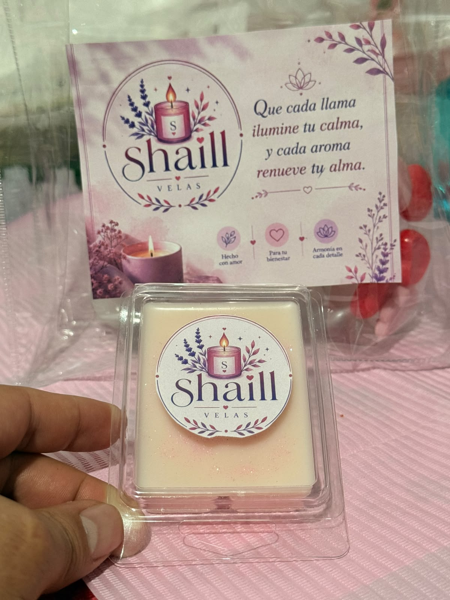

De una pasión personal a una marca que ilumina hogares

Shaill Velas nació del deseo de crear momentos de calma y armonía en el día a día. Cada cera de soya es elaborada a mano con ingredientes 100% naturales, pensando en el bienestar de quien la recibe.
Que cada llama ilumine tu calma, y cada aroma renueve tu alma. Esa es nuestra promesa. Usamos cera de soya pura, aceites esenciales de alta calidad y mucho cariño en cada pieza.
Elegimos cera de soya de origen local y aceites esenciales de la más alta calidad.
Mezclamos los ingredientes en temperaturas precisas para preservar sus propiedades aromáticas.
Cada cera se vierte a mano en moldes de corazón, flor y más formas especiales.
Empacamos con amor en materiales ecológicos, listos para iluminar tu hogar.
Empaque biodegradable, cera renovable y cero residuos en nuestro taller.
Solo cera de soya natural, sin parafina ni químicos dañinos.
Hecho con amor para tu bienestar y armonía en cada detalle.